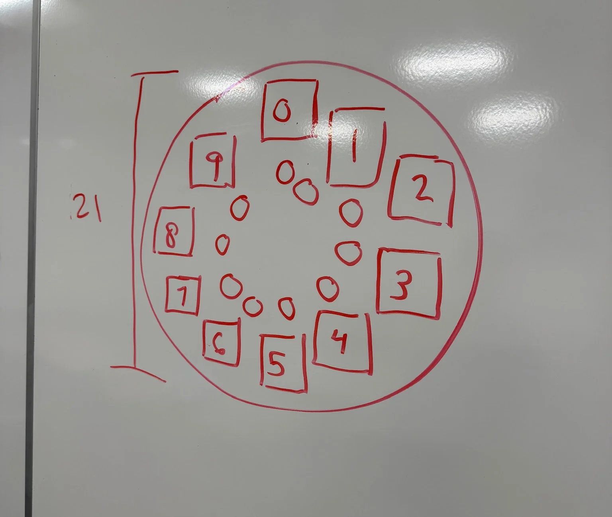
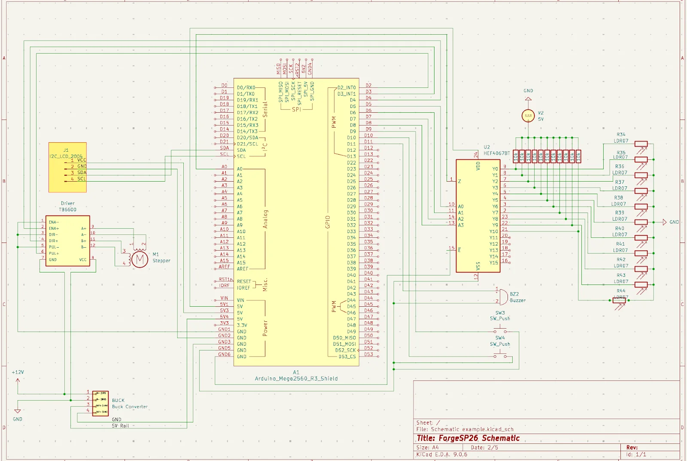
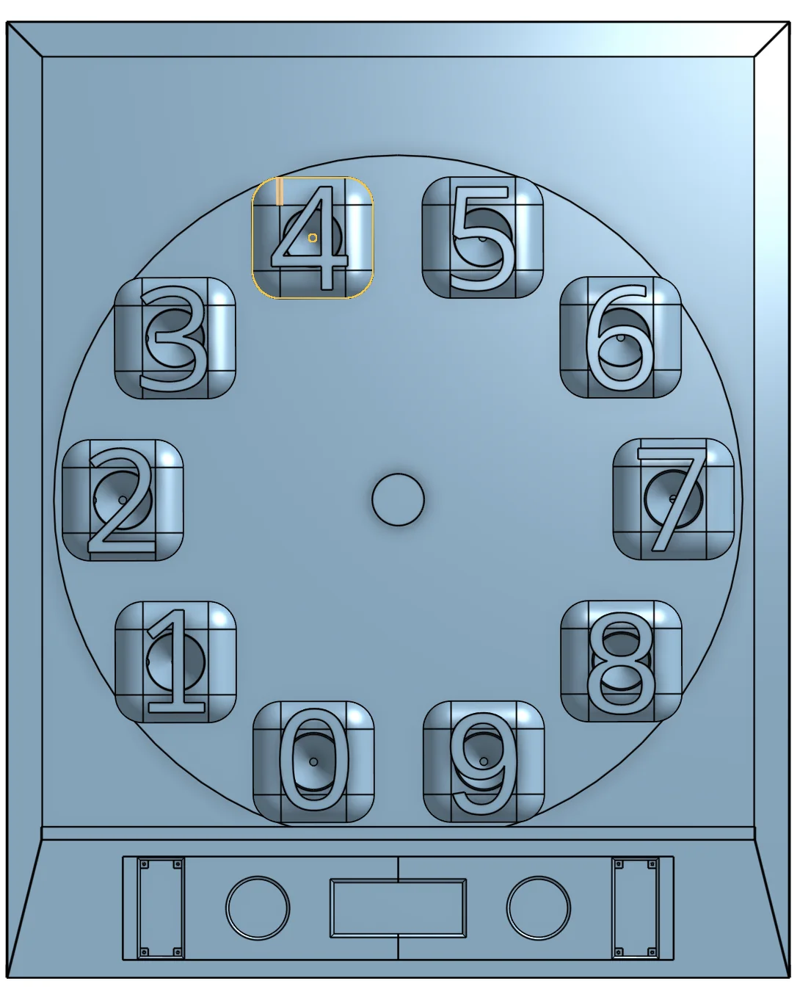
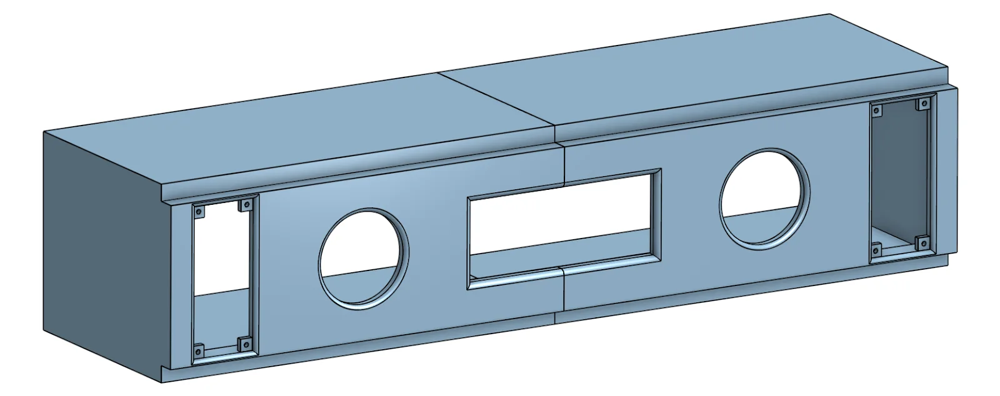
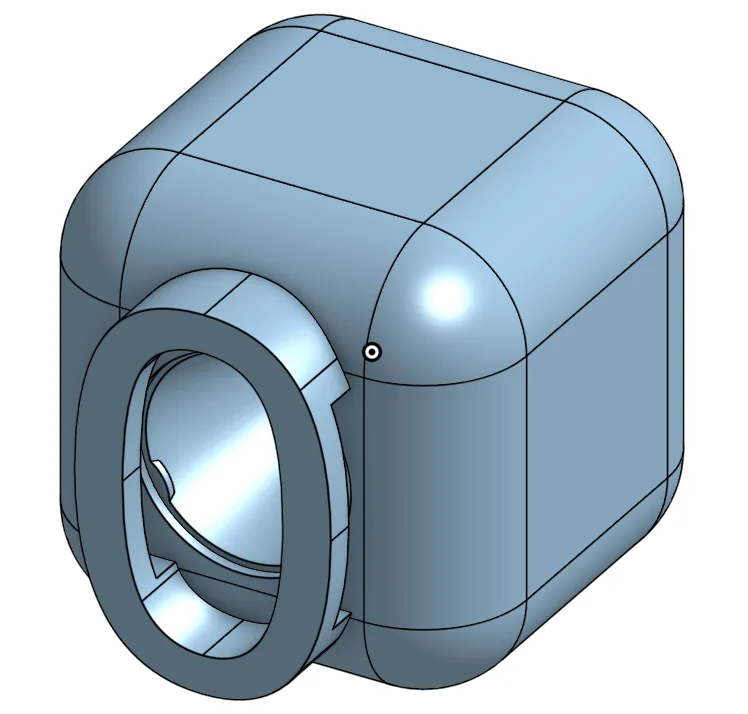
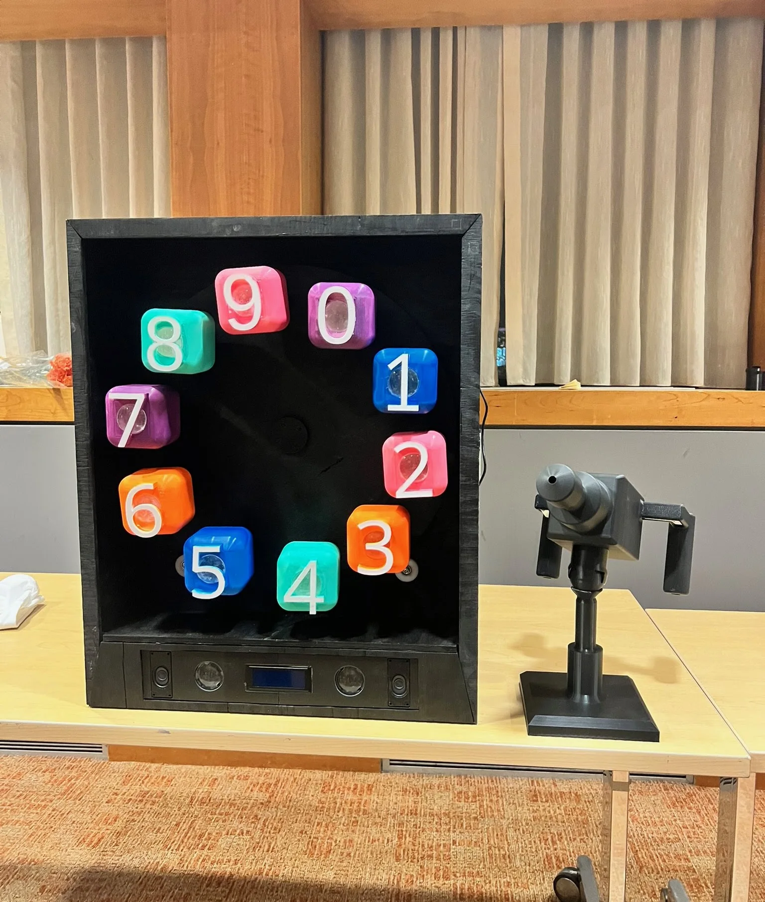

Problem
Forge challenged the student engineering teams to design and prototype a product around a semesterly theme. Ours was "Evolving Education," where we needed to build something that makes learning more engaging for the younger generation of students. Our idea was Laser Focus, an arcade game that gamifies arithmetic. Players are prompted with math problems on an LCD screen, then use a laser pointer to aim at the correct numbers on a spinning target wheel. The goal was to make doing math feel like playing an arcade game.
The engineering challenge was integrating a rotating mechanical wheel target, photoresistors for laser detection, game logic, and audiovisual feedback into a singular cohesive product, all on a tight semester timeline with a team of eight.
Ideation

My Role
A lot of my role was integrating and wiring the electrical components into the game enclosure. The game involves a stepper motor, driver, 20x4 I2C LCD, buzzer, MP3 player module, multiplexer, photoresistors (for the numbers and to act as the arcade buttons), and convex lenses, which are all connected to an Arduino Mega and powered by a 12V supply with a buck converter down to 5V logic.
The rest of the EE team and I handled wiring each of these components: routing power and signal lines between the buck converter, stepper driver, and Arduino, connecting the multiplexer to the array of photoresistors so the Arduino can assess which number the laser is hitting, wiring the I2C LCD and MP3 module for gameplay display and audio feedback, integrating the arcade interaction photoresistors, and buzzer into the input/output chain.
The target wheel holds number blocks 0–9, each containing a convex lens on the front face and a photoresistor at the focal point inside the block behind the lens. This design ensures that only a direct laser hit on the correct number focuses enough light onto the sensor to trigger detection. The stepper motor spins the wheel at different speeds and more sporadically based on the selected difficulty level, making the targets harder to hit as the game gets more challenging.
I helped develop the C++ firmware running on the Arduino Mega, building a finite state machine to manage the full game flow: splash screen, menu navigation, difficulty selection, active gameplay (problem generation, timer, scoring), and game-over states. The FSM handles input from arcade photoresistors (acting as buttons), drives the I2C 20x4 LCD for live problem display and score updates, and triggers an MP3 module for sound effects on gameplay events (correct answer chime, wrong answer buzzer, time-up alarm).
I designed the front enclosure in OnShape, applying 0.05-inch clearance tolerances and interference-free assembly of the lens, speakers, the LCD display, and other UI components. The design had to accommodate internal wiring routing and access panels for maintenance.




The Final Product

Results
Laser Focus is a fully functional arcade game that combines mechanical, electrical, and software into a singular cohesive product. Working on an 8-person team strengthened my skills in cross-disciplinary collaboration, hardware integration and interfacing, rapid prototyping, and 3D modeling. I'm grateful to my teammates for making this a great experience.